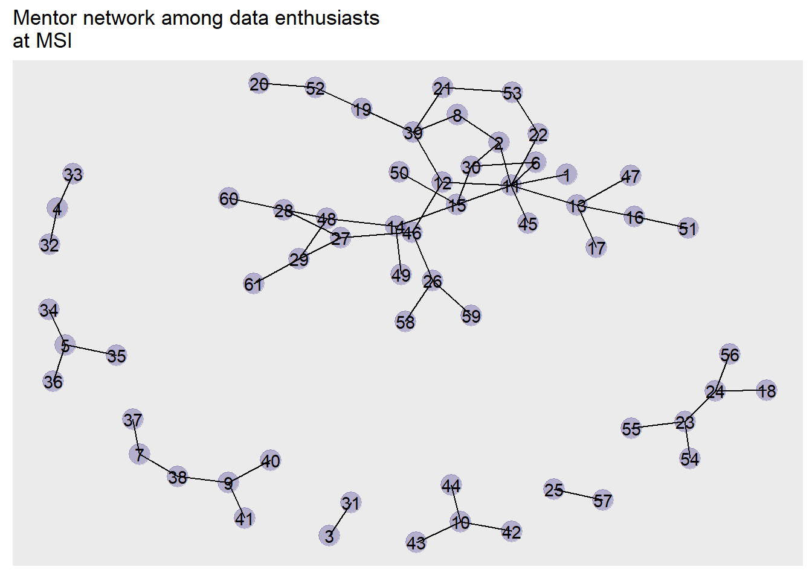
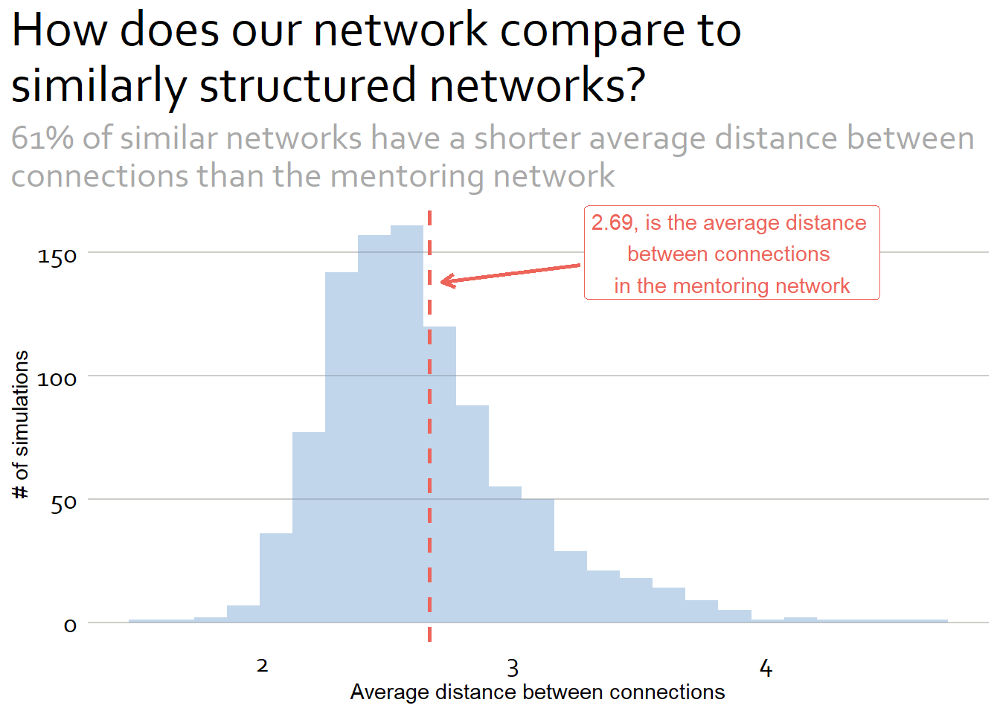

Internal Mentoring and Tech Advice Networks
Introduction
At the January 9, 2023 all company Monday meeting, Melanie Murphy presented on the Advanced Analytics and Data Science team. At the end of her presentation, we requested those interested in engaging with this team to fill out a small survey about their analytics background and where they work within the company. The final two questions, however, asked about respondents’ engagement with colleagues. They were:
- Who within MSI are you able to turn to for mentorship/career guidance?
- Who within MSI do you turn to most often to discuss or get help on technical questions?
The responses to these questions are the topic at hand in this post. First, we will look at the different statistical and software skills, and then we will analyze the informal networks that have developed within MSI, one for mentoring and the other for specific technical questions. We will then compare these with the official organizational structure.
Our methology and data
The data come from a voluntary, virtual survey that was distributed during a company meeting. The response rate was low so the Advanced Analytics team identified additional staff at the home office and on field teams to take the survey to give us a better picture of analytics at MSI. All names have been anonymized.
Let’s start by looking at some summary statistics.
Summary Statistics
We received 47 responses to the survey with 23 responses from home office staff and 24 responses from field office staff representing projects in Iraq, Nigeria, Jordan, and Zambia.
Code
#identifying the analytic softwares used at MSI
#find the individual softwares
softwares <- paste(c("R", "Stata", "SPSS", "Spss", "Nvivo", "Qualtrics", "MaxQDA"
, "Python", "ArcGIS", "Excel", "excel", "SAS"
, "EpiInfo", "STATA", "Kobo Tool Box", "Dedoose"
, "SMath Studio", "Tableau"), collapse = "|")
#create a new column that extracts the names of software used
#then create another column that unnests any lists
df1 <- df |>
mutate(new = str_extract_all(software, pattern = softwares)) |>
unnest(new)
#clean up a few software names
df1$new <- df1$new |>
recode("STATA" = "Stata"
, "Spss" = "SPSS"
, "EXCEL" = "Excel")
#then create a count of which software packages are used at MSI
df2 <- df1 |>
filter(!is.na(new)) |>
group_by(new) |>
count() |>
mutate(new2 = case_when(n == 1 ~ "Other"
, TRUE ~ new)) |>
select("Software" = new2, "Count" = n, -new) |>
arrange(desc(Count))Adding missing grouping variables: `new`Code
ggplot(data = df2
, aes(reorder(factor(Software), -Count), Count)) +
geom_point(size = 14, color = my_pal[[2]]) +
geom_segment(aes(x = factor(df2$Software), xend = factor(df2$Software)
, y = 0, yend = df2$Count)
, linewidth = 2
, color = my_pal[[2]]
, alpha = .7) +
geom_text(aes(x = Software, y = Count, label = Count)
, color = "white") +
labs(title = "Most used analytic software packages"
, subtitle = "SPSS, Stata, and R are the most commonly used."
, y = "Number of staff"
, x = "Software") +
scale_y_continuous(limits = c(0, 20))+
theme.plot()
Network statistics
Next, let’s look at the networks. We collected data for two networks – one related to mentoring and another related to technical guidance. To understand the networks we have to identify the people and their connections. In network analysis these are called, nodes and edges, respectively. To better understand how this works let’s look at an example of a dataframe that shows the ties and one that shows the nodes.
Code
```{r}
#| label: Edges and nodes
#| tbl-cap: "Network data"
#| tbl-subcap:
#| - "Nodes"
#| - "Edges"
#| layout-ncol: 2
#| tbl-colwidths: [20,20]
## example available at https://igraph.org/r/doc/graph_from_data_frame.html
## A simple example with a couple of actors
## The typical case is that these tables are read in from files....
actors <- data.frame(name=c("Alice", "Bob", "Cecil", "David",
"Esmeralda"),
age=c(48,33,45,34,21),
gender=c("F","M","F","M","F"))
relations <- data.frame(from=c("Bob", "Cecil", "Cecil", "David",
"David", "Esmeralda"),
to=c("Alice", "Bob", "Alice", "Alice", "Bob", "Alice"),
same.dept=c(FALSE,FALSE,TRUE,FALSE,FALSE,TRUE),
friendship=c(4,5,5,2,1,1), advice=c(4,5,5,4,2,3))
table1 <- flextable(actors) |>
set_header_labels(values = list(
))
table2 <- flextable(relations) |>
set_header_labels(values=list(
))
table1
table2
```Network data
from | to | same.dept | friendship | advice |
Bob | Alice | FALSE | 4 | 4 |
Cecil | Bob | FALSE | 5 | 5 |
Cecil | Alice | TRUE | 5 | 5 |
David | Alice | FALSE | 2 | 4 |
David | Bob | FALSE | 1 | 2 |
Esmeralda | Alice | TRUE | 1 | 3 |
On the left, are the nodes. Each one name is one person in the network. The ties, or connections, between them is displayed in the table on the right. Bob is connected to Alice, and you can see that Cecil is connected to both Bob and Alice. David is connected to both Alice and Bob.
These two dataframes can be merged into a graph object, and they can be visualized as a network as in the below.
Code
g <- graph_from_data_frame(relations, directed=TRUE, vertices=actors)
ggraph(g, "with_kk") +
geom_node_point(aes(color = gender)#color = my_pal[[2]]
, size = 8
, alpha = .3) +
geom_edge_link(aes(color = same.dept
, alpha = friendship))+#color = my_pal[[2]]
#, alpha = .3) +
geom_node_text(aes(label = name)) +
labs(title = "Office network"
, subtitle = "Friendships cross departments, but not all staff have friends in the other department")+
theme.graph()Warning: Using the `size` aesthetic in this geom was deprecated in ggplot2 3.4.0.
ℹ Please use `linewidth` in the `default_aes` field and elsewhere instead.
In the graph we see a few points communicated, including the ties, sex, how strong a friendship is between ties, and whether or not the nodes (people) are in the same department. We now see that Esmeralda has no friendships in the other office. We could also say that she has the smallest neighborhood – the smallest number of first order, or direct, connections.
MSI’s Mentoring network
Network | Density | Avg. Distance | Transitivity | Betweenness | Eigenvalue |
Mentorship | 0.15 | 2.69 | 0.15 | 14.39 | 0.33 |
Within the SEA practice area we had 18 nodes in our network consisting of 23 edges.

MSI’s SEA Technical Guidance Network
Within the SEA practice area we had 19 nodes in our network consisting of 32 edges.
Code
#| label: fig-charts
#| fig-align="center"
#| fig-width=6
#| fig-height=4
ggraph(df_graph_tech, layout = "with_kk") +
geom_edge_link(color = my_pal[[10]]
, alpha = .3) +
geom_node_point(color = my_pal[[10]]
, size = 4) +
labs(title = "Technical advice network among data enthusiasts at MSI"
, subtitle = "tech-tech-tech-ni-cal") +
theme.graph() +
theme(legend.position = "none")
Network statistics
Code
#Calculate some network statistics - density, mean distance, betweeness, transitivity, and eigenvector centrality
#calculate the network density
density_tech <- edge_density(df_graph_tech)
#calculate the mean_distance
avg_dist_tech <- mean_distance(df_graph_tech, directed = FALSE)
#calculate the betweeness
b2 <- betweenness(df_graph_tech, directed = FALSE)
between_tech <- mean(b2)
#calculate the transitivity of the network
trans_tech <- transitivity(df_graph_tech)
#eigenvalues vector
e1_tech <- eigen_centrality(df_graph_tech, directed =FALSE)$vector
#calculate avg. eigenvalue of the network
eigen_tech <- mean(e1_tech)
names <- c("Network", "Density", "Avg. Distance", "Transitivity", "Betweenness", "Eigenvalue")
values <- c("Tech guidance", density_tech, avg_dist_tech, trans_tech, between_tech, eigen_tech)
dat_tech <- data.frame(names, values)
dat1_tech <- pivot_wider(data = dat_tech
, names_from = names
, values_from = values) |>
mutate(across(2:6, as.numeric))
dat2 <- bind_rows(dat1, dat1_tech)
network_table1 <- flextable(dat2) |>
set_header_labels(values = list(
)) |>
align(align = "center", part = "all") |>
colformat_double(digits = 2)
network_table1Network | Density | Avg. Distance | Transitivity | Betweenness | Eigenvalue |
Mentorship | 0.15 | 2.69 | 0.15 | 14.39 | 0.33 |
Tech guidance | 0.19 | 2.65 | 0.35 | 14.84 | 0.34 |
How do these statistics compare with what we would expect from similar networks? We can run some simulations to find out.
Code
#simulation of mentorship network 1000x
gl <- vector('list', 1000)
for(i in 1:1000){
gl[[i]] <- erdos.renyi.game(
n = gorder(df_graph_ment)
, p.or.m = edge_density(df_graph_ment)
, type = "gnp"
)
}
gl.apls = unlist(lapply(gl, mean_distance, directed=FALSE))
hist(gl.apls)
abline(v= avg_dist_ment, col = "red", lty = 3, lwd = 2)Code
mean(gl.apls < avg_dist_ment)[1] 0.61